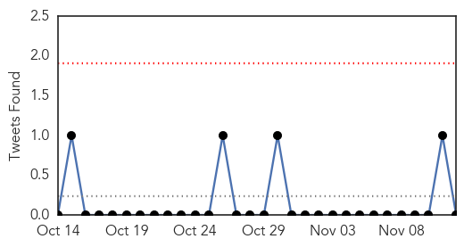
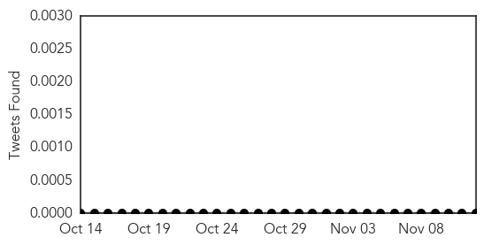
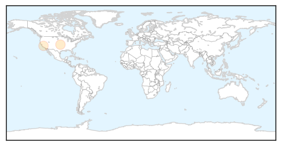

Influenza
30-Day Web Trend
0 alerts, 0 warnings

30-Day Twitter Trend
0 alerts, 0 warnings

Article Locations

Article Confidences

Top Articles:
- 0.996
- Now, doctors gear up to counter MERS
- 0.991
- Defending against the flu
- 0.985
- Researchers Receive Grant to Study New Influenza Virus
- 0.975
- Why I got the flu vaccine for myself and my children
- 0.974
- My children and I have been vaccinated against the flu
- 0.969
- Keep Flu Season at Bay with a Little Help from Standards
- 0.881
- Rule would allow hospitals to require masks for unvaccinated personnel
- 0.676
- New antiviral drug from Urals will help fight Ebola and other viruses
Top Tweets:
- 0.597
- VaxInnate Quadrivalent Seasonal Influenza Vaccine Candidate meets Phase 1 Seasonal Influenza Endpoints http://t.co/e8dE7rrmhf via
Mold/Fungal
30-Day Web Trend
5 alerts, 0 warnings

30-Day Twitter Trend
0 alerts, 0 warnings

Article Locations
Article Confidences

Top Articles:
Top Tweets:
-
No tweets found for Nov 12, 2014